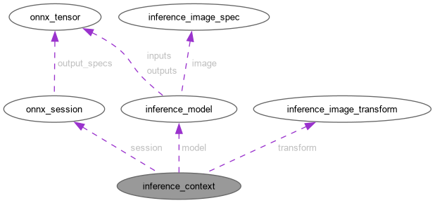

Independent, noncopyable model owner; mapped tensor buffers and session are reused between jobs. More...
#include <inference_model.h>

Data Fields | |
| struct inference_model | model |
| struct onnx_session | session |
| struct inference_image_transform | transform |
| void * | storage |
| size_t | storage_bytes |
| unsigned | timeout_ms |
| uint64_t | frame_sequence |
| uint64_t | sensor_timestamp_ns |
| bool | capture_identity |
| bool | private_image |
Detailed Description
Independent, noncopyable model owner; mapped tensor buffers and session are reused between jobs.
Definition at line 43 of file inference_model.h.
Field Documentation
◆ capture_identity
| bool inference_context::capture_identity |
Sequence/time came from this retained capture rather than an offline request.
Definition at line 51 of file inference_model.h.
◆ frame_sequence
| uint64_t inference_context::frame_sequence |
Definition at line 50 of file inference_model.h.
◆ model
| struct inference_model inference_context::model |
Definition at line 44 of file inference_model.h.
◆ private_image
| bool inference_context::private_image |
Producer owns exclusive pre-publication mutation rights.
Definition at line 52 of file inference_model.h.
◆ sensor_timestamp_ns
| uint64_t inference_context::sensor_timestamp_ns |
Definition at line 50 of file inference_model.h.
◆ session
| struct onnx_session inference_context::session |
Definition at line 45 of file inference_model.h.
◆ storage
| void* inference_context::storage |
Private mapped arena; ORT's own allocations are additional.
Definition at line 47 of file inference_model.h.
◆ storage_bytes
| size_t inference_context::storage_bytes |
Mapped tensor bytes, not the whole model/process footprint.
Definition at line 48 of file inference_model.h.
◆ timeout_ms
| unsigned inference_context::timeout_ms |
Per-run cooperative budget.
Definition at line 49 of file inference_model.h.
◆ transform
| struct inference_image_transform inference_context::transform |
Definition at line 46 of file inference_model.h.
The documentation for this struct was generated from the following file: